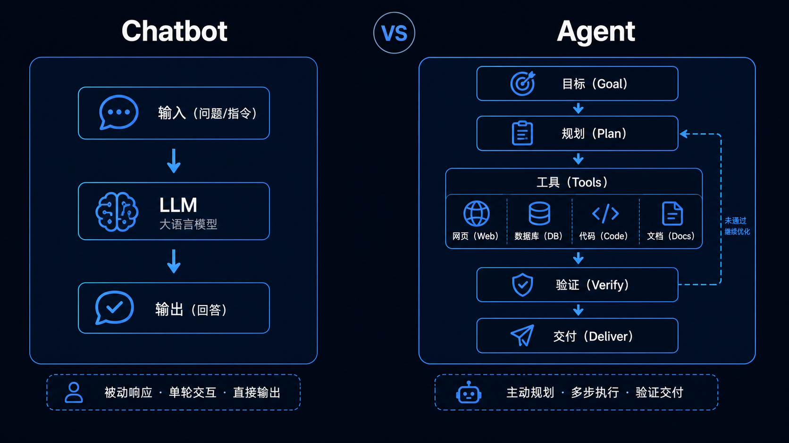
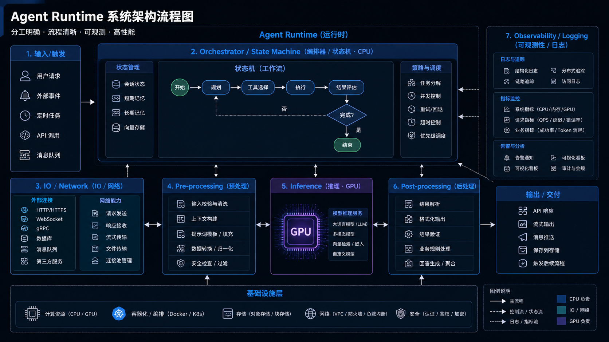
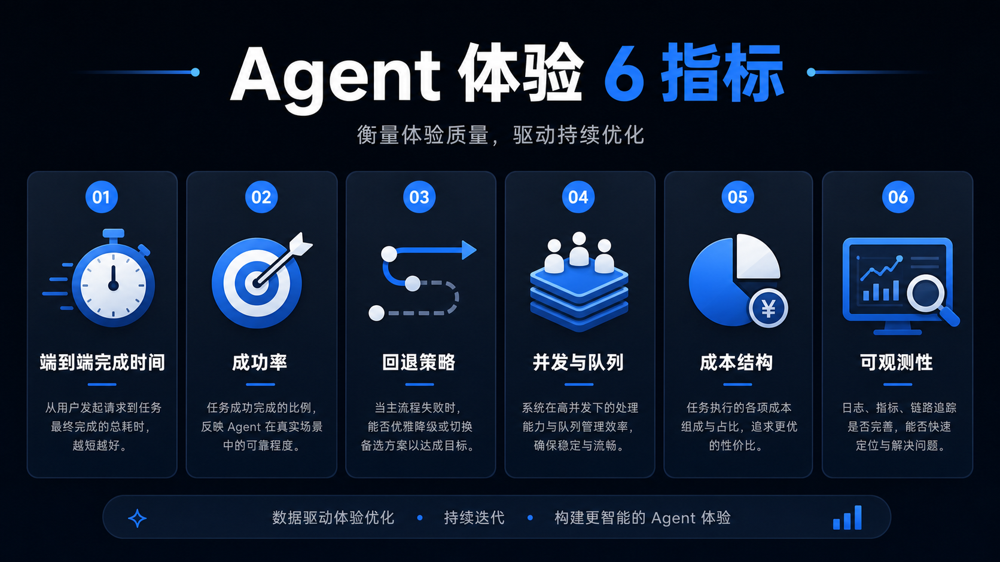

过去两年，我们习惯把 AI 进步等同于“更强的大模型”。但 2026 年开始，一个更关键的变化正在发生：Agent（能调用工具、执行任务的 AI）让整套计算栈被迫重做。当 AI 从“输出文字”走向“完成任务”，GPU 不再是唯一主角——CPU 反而变成系统瓶颈与体验天花板。
01 什么是 Agent？它和 Chatbot 的差别在哪
把 Chatbot 想成“会写作的发动机”，把 Agent 想成“能接单的运营团队”。
- Chatbot：一次输入 → 一次输出，主要成本在模型推理。
- Agent：目标输入 → 多轮规划 → 调用工具（搜索/代码/表格/数据库/邮件/工单/浏览器）→ 结果交付。关键变化是：推理只是其中一段，更多时间花在“找数据、跑流程、等 I/O、做校验、做回退”。

图：Chatbot（一次回答） vs Agent（任务生产线）
一句话：Agent 是一个长链路的“系统”，不是一个单点模型。
02 Agent 链路里，CPU 到底在忙什么？
很多人以为“AI=GPU”，但在 Agent 场景里，CPU 的工作量会陡增，常见包括：
- 任务编排与状态机：维护进度/上下文/下一步动作/失败重试/回退策略（多在 CPU 侧调度）。
- I/O 与数据搬运：网络请求、读写文件、访问数据库、解析文档；GPU 等数据很贵，CPU 是把 I/O 管顺的核心。
- 推理前后处理：RAG 切分与触发、结构化校验、内容安全、缓存、日志与可观测性。
- 多模型/多工具协作：路由/调用/执行/回传的串联与治理。

图：Agent runtime 中 CPU（编排/I-O/治理）与 GPU（推理）分工
结论：Agent 让“系统效率”决定最终体验，而系统效率往往由 CPU/I/O/调度决定。
03 为什么现在需要“为 Agent 重新设计 CPU”？
因为 Agent 时代的用户体验指标变了：
- Chatbot 时代：回答好不好、token 成本高不高。
- Agent 时代：能不能按时完成、会不会翻车、失败能不能自救、并发上来会不会崩、整体成本能不能控。
因此压力会集中在三件事：
- 更低延迟的编排与更稳定吞吐（否则工具调用等待会把体验拖成 PPT）。
- 更高可靠性与可观测性（企业客户要能追责、能复盘、能治理）。
- 更好的端到端成本（把不该占 GPU 的活挪走，成本会明显下降）。
你会看到：硬件叙事从“算得更快”转向“跑得更稳、更省、更可控”。这就是“Agent 栈重做”的本质。
04 对普通人/创作者意味着什么？不是买 CPU，而是内容机会来了
你不需要关心 Vera 的每个参数，但可以抓住一个更能传播的讲法：
- 反直觉科普：为什么卷 GPU 之外，还要卷 CPU？
- 体验拆解：Agent 为什么慢？慢在哪里？怎么变快？
- 产业趋势：Agent 让哪些岗位/产品先吃到红利？
05 一张图讲清：Agent 时代你应该盯哪些指标

图：端到端完成时间 / 成功率 / 回退策略 / 并发与队列 / 成本结构 / 可观测性
建议你在内容里反复强调这 6 个“可衡量”的指标，它们决定“能不能交付”。
结尾
Agent 时代不是“模型更强”，而是“系统更像生产线”。当 AI 从内容生成走向任务交付，硬件与系统架构会决定大多数人的真实体验——这就是为什么 NVIDIA 会谈“面向 Agentic AI 的 CPU（Vera）”。